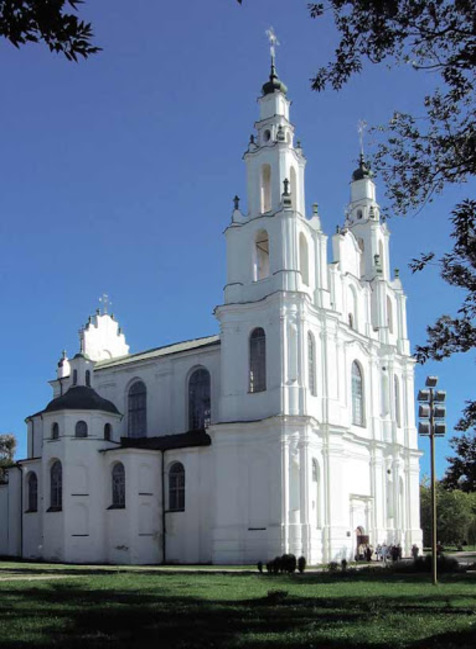

маршрут #12
Исторический центр
«Мать городов белорусских», первая столица Беларуси — Полоцк — был построен на одном из маршрутов великого торгового пути «из варяг в греки».
Полоцк — самый древний город Беларуси, наряду с Киевом и Новгородом древнейший город на славянских землях.
В Полоцке зародилась белорусская государственность и культура, в нем родились Евфросиния Полоцкая, Франциск Скорина, Симеон Полоцкий — слава и гордость белорусского народа
